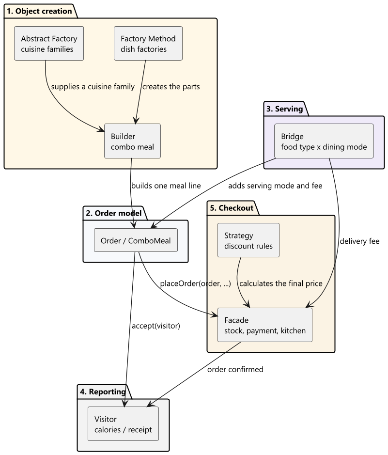
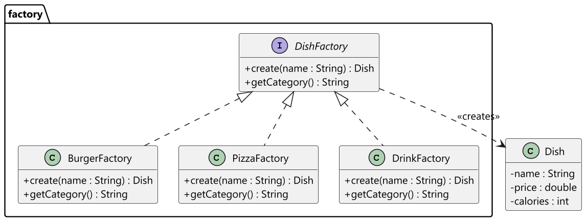
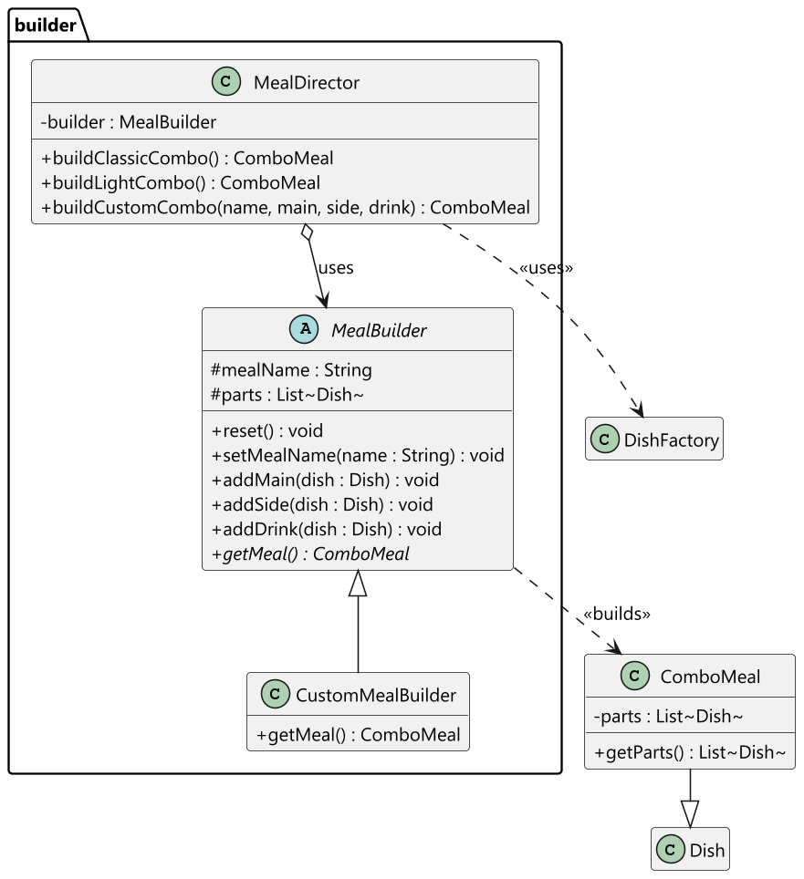
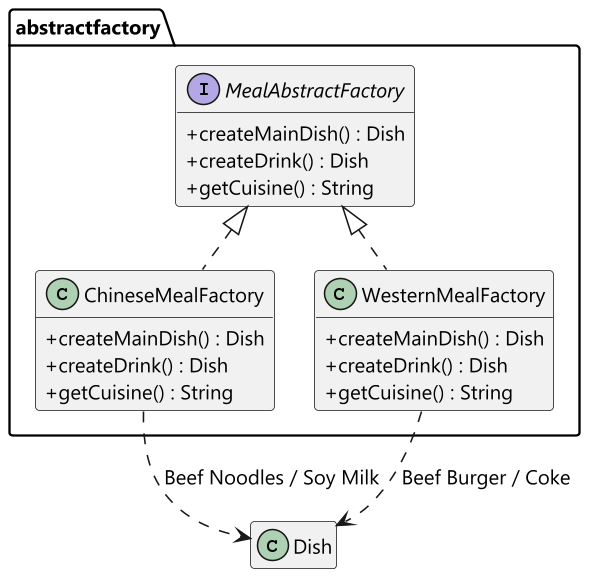
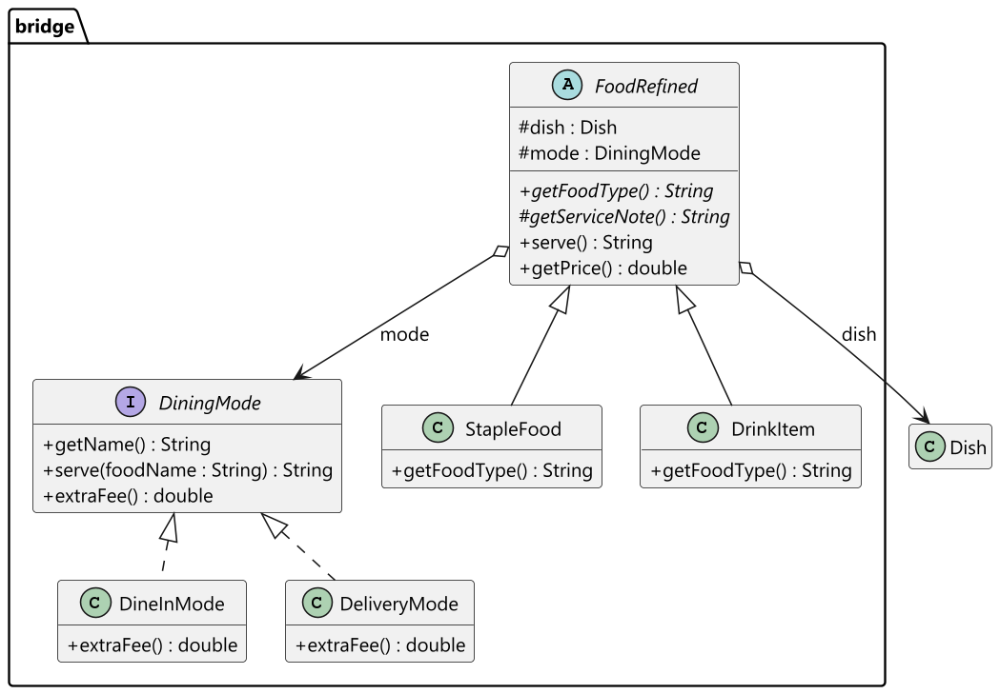

The application is organised as a small layered pipeline. Dishes are created first, a combo meal may be assembled from them, the meal is put into an order, the order is served through a dining mode, it can be reported on, and finally it is checked out through a single facade method. Figure 1 shows this flow together with the pattern responsible for each step.

The package structure follows the same idea: one package per pattern, plus a model package that holds
the entities shared by all patterns. The dependency direction is important and intentional — the
model package depends on nothing except the visitor.OrderVisitor interface, so the
entities can be reused by any of the behavioural patterns.
| Package | Pattern | Responsibility |
|---|---|---|
model | — | Dish, ComboMeal, Order: the data every other package works with |
factory | Factory Method | Creates single dishes (burgers, pizzas, drinks) by name |
builder | Builder | Assembles a ComboMeal step by step; the director owns the recipes |
abstractfactory | Abstract Factory | Creates consistent Chinese or Western meal families |
bridge | Bridge | Combines a food type (staple / drink) with a dining mode (dine-in / delivery) |
facade | Facade | Runs stock, payment, kitchen and notification as one transaction |
strategy | Strategy | Computes the final price for normal, VIP and holiday customers |
visitor | Visitor | Adds operations to the order: calories and receipt export |
| — | Client | Main demonstrates every pattern, then places two real orders |
Intent. Define an interface for creating an object, but let the subclasses decide which class to instantiate. The client works with the product through its interface and never calls a constructor of a concrete dish.
In the menu every category has its own factory. DishFactory declares two operations:
create(name) returns a Dish, and getCategory() returns the name of the
category for logging. BurgerFactory, PizzaFactory and DrinkFactory are the
concrete creators; Dish is the product.

DishFactory and three concrete creators.
The client only depends on the interface and on Dish.public class BurgerFactory implements DishFactory {
@Override
public Dish create(String name) {
switch (name) {
case "Beef Burger": return new Dish("Beef Burger", 6.50, 550);
case "Chicken Burger": return new Dish("Chicken Burger", 5.50, 480);
case "Veggie Burger": return new Dish("Veggie Burger", 4.80, 390);
default: throw new IllegalArgumentException("Unknown burger: " + name);
}
}
@Override
public String getCategory() {
return "Burger";
}
}
Note on the exact form. The operation takes the dish name as a parameter, so a concrete creator decides the
category and the menu data rather than the product class: Dish is the only product type in the
system. In GoF terms this is a parameterised factory method, and the switch inside each concrete creator
is the simple factory that turns a name into values. Splitting the product into Burger, Pizza
and Drink subclasses would let the polymorphism reach the product class as well; it is not done here
because every dish carries the same three fields, so the extra hierarchy would add classes without adding behaviour.
Why it is used here. Prices and calories belong to the menu, not to the client. If the kitchen changes the
price of a burger, only BurgerFactory changes. A new category (for example a dessert factory) is added
as a new class and the existing client code is not touched at all.
Trade-off. One class per product category is more code than a single switch over a dish name.
The pattern pays off when categories are added by different people or when each category needs its own data source;
for a five-item menu a plain factory class would be simpler, and this is worth saying honestly during the defence.
Intent. Separate the construction of a complex object from its representation, so that the same construction process can create different representations.
A combo meal is not a new kind of food, it is a composition of dishes with its own price. The solution keeps
the product inside the model package: ComboMeal extends Dish, therefore a built meal can be
added to an order exactly like a single burger, and it inherits the accept(visitor) operation, which the
Visitor pattern later uses.

MealDirector knows the recipes and the order of the steps,
MealBuilder collects the parts, CustomMealBuilder decides how the final meal is built.public class MealDirector {
private final MealBuilder builder;
public MealDirector(MealBuilder builder) {
this.builder = builder;
}
/** Classic recipe: beef burger + fries + coke. */
public ComboMeal buildClassicCombo() {
DishFactory burgers = new BurgerFactory();
DishFactory drinks = new DrinkFactory();
builder.reset();
builder.setMealName("Classic Combo");
builder.addMain(burgers.create("Beef Burger"));
builder.addSide(new Dish("Fries", 2.00, 320));
builder.addDrink(drinks.create("Coke"));
return builder.getMeal();
}
}
public class CustomMealBuilder extends MealBuilder {
@Override
public ComboMeal getMeal() {
double sum = 0;
for (Dish dish : parts) {
sum += dish.getPrice();
}
double comboPrice = sum * 0.9; // a combo is 10% cheaper
return new ComboMeal(mealName, new ArrayList<>(parts), comboPrice);
}
}
Why it is used here. The three steps main / side / drink are fixed, but their content is not. The
director owns the recipes (classic, light, custom), the builder owns the pricing rule, and the client never has to
remember the correct order of calls. Note the collaboration with the previous pattern: the director asks a
DishFactory for the parts instead of creating them itself.
Trade-off. Three types (builder, concrete builder, director) for one product is heavy when the product has only two fields. The pattern is justified here because a combo has a variable number of optional parts and because the pricing rule differs between builders.
Intent. Provide an interface for creating families of related objects without specifying their concrete classes.
The restaurant offers two set meals. A Chinese set must contain a Chinese main dish and a Chinese drink; a Western set
must not mix a burger with soy milk. MealAbstractFactory declares one creation method per product of the
family, and each concrete factory returns a consistent family.

public interface MealAbstractFactory {
Dish createMainDish();
Dish createDrink();
String getCuisine();
}
public class ChineseMealFactory implements MealAbstractFactory {
@Override
public Dish createMainDish() { return new Dish("Beef Noodles", 4.50, 600); }
@Override
public Dish createDrink() { return new Dish("Soy Milk", 2.50, 120); }
@Override
public String getCuisine() { return "Chinese"; }
}
Difference from Factory Method. This is a question that is asked in almost every defence, so it is stated explicitly. Factory Method creates one product and is usually implemented by inheritance: the subclass overrides the factory method. Abstract Factory creates a family of products and is implemented by composition: the client holds a reference to the factory interface and calls several creation methods on it. In this project the two patterns are used together — the abstract factory produces the family, and the builder turns it into one meal, which is shown in Section 2.9.
Trade-off. Adding a new product to the family (for example createDessert()) forces a change in the
interface and therefore in every concrete factory. Adding a new family (Japanese cuisine) is cheap: one new class.
Intent. Decouple an abstraction from its implementation so that the two can vary independently.
Two dimensions change independently in a restaurant: what is served (a staple food or a drink, each with its own serving note) and how it is served (dine-in or delivery, the latter with an extra fee). Without the pattern, four classes would be needed for the four combinations, and adding a third dining mode would produce nine.

FoodRefined is the abstraction, DiningMode is the
implementor. The two hierarchies can grow independently.public abstract class FoodRefined {
protected final Dish dish;
protected final DiningMode mode;
protected FoodRefined(Dish dish, DiningMode mode) {
this.dish = dish;
this.mode = mode;
}
public abstract String getFoodType();
protected abstract String getServiceNote();
/** The serving work is delegated to the dining mode. */
public String serve() {
return "[" + mode.getName() + "] " + mode.serve(dish.getName())
+ " (" + getServiceNote() + ")";
}
/** Food price + the fee of the dining mode. */
public double getPrice() {
return dish.getPrice() + mode.extraFee();
}
}
Why it is used here. The number of classes grows as a sum instead of a product: two food types plus two dining
modes give four classes instead of four combinations, and a third mode costs one new class. The bridge is also
connected to the rest of the system: extraFee() is used by the facade when the final price is computed,
so the delivery surcharge is defined in exactly one place.
Trade-off. The client must know both hierarchies and decide which pair to instantiate. For a system with only one dimension of variation, a simple subclass is enough and the bridge would be over-engineering.